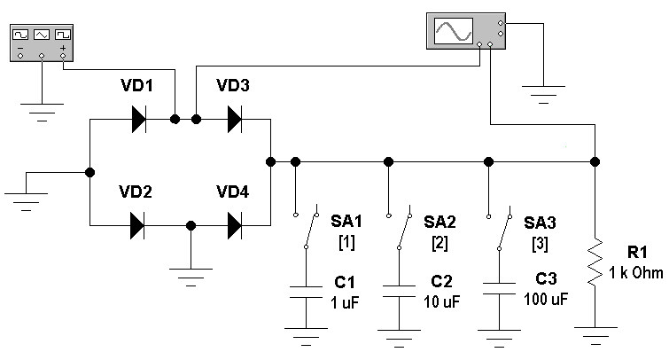
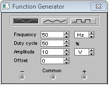
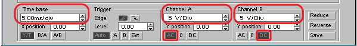
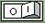
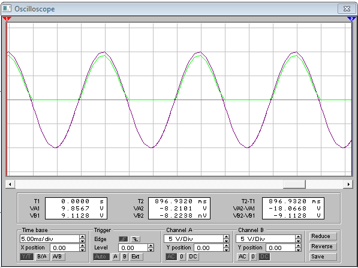

Electronics Workbench
Исследование работы мостового выпрямителя в программе Electronics Workbench
Узнать о выпрямителях можно здесь
1. Исследование параметров синусоидального сигнала
- Запустите программу Electronics Workbench.
- Соберите для исследования модель схемы мостового выпрямителя (рис. 1).

Рис. 1 - Модель схемы мостового выпрямителя
- Установите свойства элементов схемы (табл. 1).
Для установки свойств:- сделайте двойной щелчок на элементе;
- откройте вкладку (Label или Value);
- установите значения.
Таблица 1
Свойства элементов схемы Обозначение
элементаВкладка Label
(Свойство:Значение)Вкладка Value
(Свойство:Значение)VD1 Label: VD1 - VD2 Label: VD2 - VD3 Label: VD3 - VD4 Label: VD4 - SA1 Label: SA1 Key: 1 SA2 Label: SA2 Key: 2 SA3 Label: SA3 Key: 3 C1 Label: C1 Capacitance (C): 1 µF C2 Label: C2 Capacitance (C): 10 µF C3 Label: C3 Capacitance (C): 100 µF R1 Label: R1 Resistance (R): 1 kΩ - Установите на функциональном генераторе частоту 50 Гц и амплитуду 10 В синусоидального сигнала (рис. 2).

Рис. 2 - Параметры генератора
- Закрасьте проводники идущие ко входам осциллографа в разные цвета:
- сделайте двойной щелчок на проводнике;
- выберите цвет.
- Сделайте двойной щелчок на осциллографе.
- В появившемся окне щелкните на кнопке «Expand».
- Выполните настройку осциллографа (рис. 3):
- масштаб по времени - 5 мс/дел (5.00 ms/div);
- чувствительность каналов - 5 В/дел (5.00 V/div);
- канал А - емкостной вход (кнопка АС);
- канал В - потенциальный вход (кнопка DC) .

Рис. 3 - Настройки осциллографа
- Включите схему на 2-3 секунды, щелкнув на кнопке Activate simulation

. - Выключите схему.
- В рабочей тетради зарисуйте изображение осциллограммы сигналов на входе и выходе выпрямителя (рис. 4).
Масштаб: 1 см в тетради равен 1 делению экрана осциллографа.

Рис. 4 - Осциллограммы сигналов на входе (фиолетовый цвет) и выходе (зелёный цвет) выпрямителя
- В рабочей тетради зарисуйте осциллограммы полученные при подключении к выходу выпрямителя конденсаторов ёмкостью 1 мкФ, 10 мкФ, 100 мкФ. Подключение конденсаторов осуществляется нажатием на клавиатуре клавиш [1], [2], [3] соответственно. Масштаб: 1 см в тетради равен 1 делению экрана осциллографа.
- Проанализируйте полученные результаты и сделайте выводы.